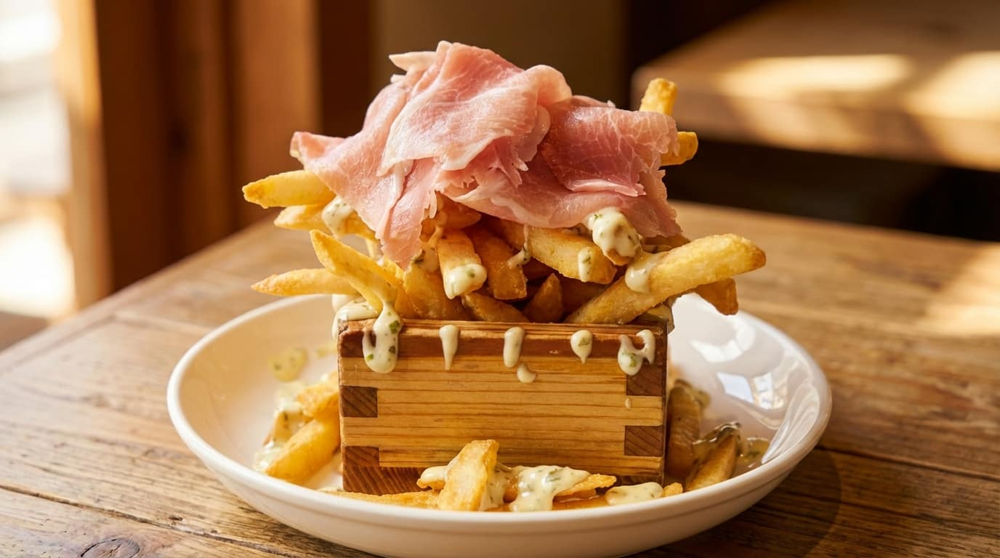
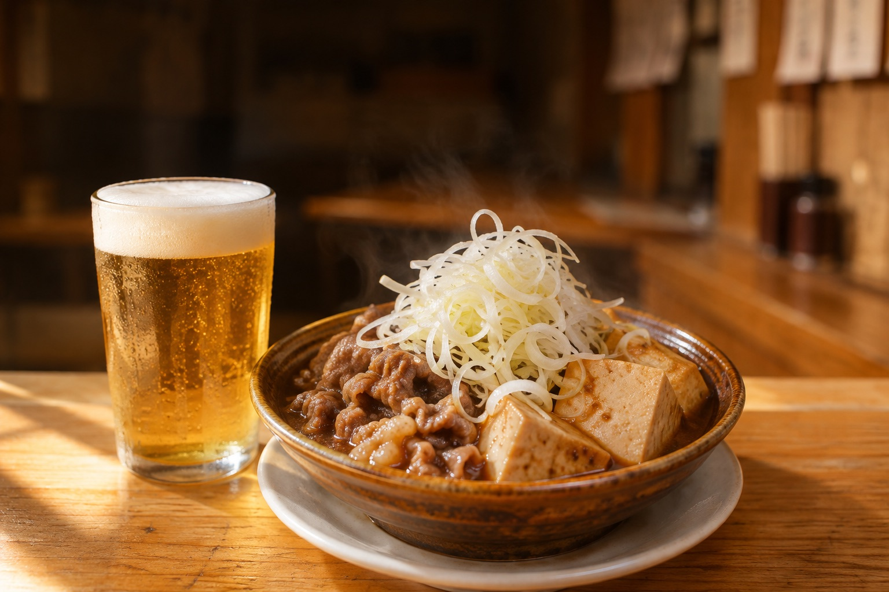
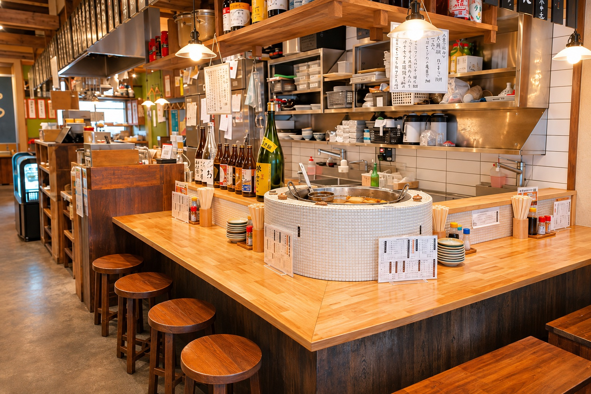

01 / つまむニューごちポテト
お酒の横に置きたい、うめぼしらしい一皿。仲間と分け合ってどうぞ。

昼から、ふらり。
夜まで、ゆっくり。
旨い肴と、
いい時間。
天神南駅から、歩いて一分。
11:30 — 24:00 お昼ごはんも、昼呑みも。
01 / うめぼしのこと
天神のにぎわいから、路地へひと曲がり。
暖簾の先には、湯気の立つ肉豆腐と
よく冷えた一杯が待っています。
お腹がすいたお昼も、仕事帰りの寄り道も。
ひとりでふらりと、仲間とわいわい。
食べて、呑んで、ほっとする。
そんな毎日の食堂でありたいと思っています。
03 / 店内のこと

木の温もりと、壁いっぱいのお品書き。
おひとり様も、友人とのごはんも。
気軽に暖簾をくぐってください。